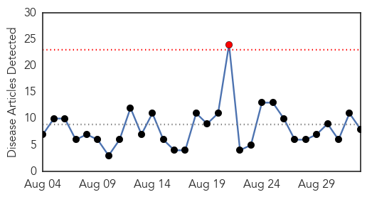
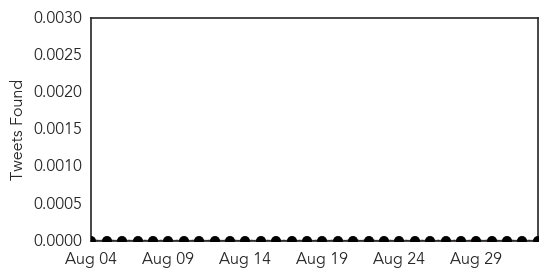
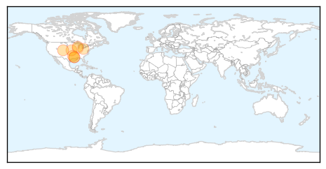

30 Day Trends
Web: 1 alerts, 0 warnings
Twitter: 0 alerts, 0 warnings
Top Articles:
- 0.989
- JeffCo confirms 1st human case of West Nile Virus
- 0.950
- Two cases of West Nile Virus registered in Northwest Louisiana
- 0.909
- Kansas City doctors prepare for flu shot season
- 0.894
- KSLA News 12 Shreveport, Louisiana News Weather & Sports
- 0.894
- Family warning others about West Nile Virus
- 0.888
- Mosquito batch collected in Mitchell Park in Brookfield tests positive for West Nile Virus
- 0.885
- Summit County gets first West Nile virus case of the year - Falls News Press
- 0.598
- 2 Confirmed West Nile Deaths In Illinois This Year
Top Tweets:
-
No tweets found for Sep 02, 2015
Web/News Articles
Tweets
Article Locations
Article Confidences